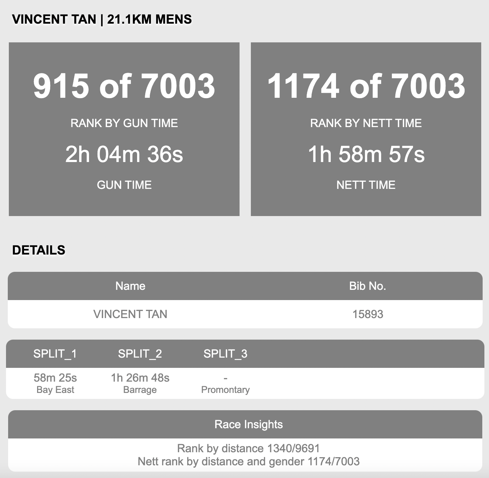

Vincent Y. F. Tan 陈延福 (Pronouns: he/him/his/他)

Images courtesy of Dave Lee (UCO, NUS) |
Associate Professor,
Affiliate,
Office: E4-06-06 (ECE) and S17-05-20 (Mathematics)
My Curriculum Vitae.
|
News (Archive)
- Advertisement: Looking to hire motivated postdocs. Please see this advertisement for more details.
- Jun 2023: Congratulations to former Ph.D. student Zixin Zhong for winning the Louis Chen Hsiao Yun Best Dissertation Prize from the NUS Maths department!
- Jun 2023: Congratulations to Ph.D. student Pan Jiachun for successfully completing her thesis defense.
- May 2023: Received 4.2/5.0 for my teaching of some of the lectures of EE2211 Introduction to Machine Learning. See review quotes here.
- May 2023: Congratulations to Ph.D. students Jingyi Zhao and Jiawei Du for successfully completing their thesis defenses.
- Apr 2023: Traveling to ICLR 2023, Bilkent University, and Middle East Technical University (METU). See you in Kigali, Rwanda and Ankara, Turkey.
- Apr 2023: Posted a paper on Communication-Constrained Bandits under Additive Gaussian Noise to be presented at ICML 2023. Here, the agent's observation is quantized and passed through a Gaussian channel before the next action is taken. This is joint work with postdoc Prathamesh Mayekar and collaborator Jonathan Scarlett.
- Apr 2023: Two papers accepted to ICML 2023! Both are on multi-armed bandits. The first paper is titled Probably Anytime-Safe Stochastic Combinatorial Semi-Bandits. Here, the agent's choices at every time instant should contain items whose sum of risks does not exceed a certain risk budget. This is joint work with Ph.D. student Yunlong Hou and former Ph.D. student Zixin Zhong. The second paper is titled Communication-Constrained Bandits under Additive Gaussian Noise. Here, the agent's observation is quantized and passed through a Gaussian channel before the next action is taken. This is joint work with postdoc Prathamesh Mayekar and collaborator Jonathan Scarlett.
-
Apr 2023: In some non-academic news, I completed the 2XU Compression Half Marathon in less than 2 hours (Sub 2!) albeit the course being slightly short. More precisely, Garmin said I covered 20.57km in 1 hour 58 mins and 59 seconds.

- Apr 2023: Paper on "Codes for Correcting t Limited-Magnitude Sticky Deletions" accepted to ISIT 2023. This is joint work with Ph.D. student Shuche Wang and Vu Van Khu.
- Apr 2023: Our team's submission "Sequential Methods in Quantum Hypothesis Testing" was selected for a talk at TQC 2023.
- Mar 2023: Congrats to FYP student Xiaochen Zhu for the acceptance of his abstract titled "Link Local Differential Privacy for GNNs via Bayesian Estimation" by the ACM Student Research Competition (SIGMOD '23)!
- Mar 2023: Featured in NUS News as part of the International Day of Mathematics. Also available in Chinese.
- Mar 2023: Paper on Covert Communication with Mismatched Decoders accepted to the IEEE Transactions on Information Theory. Joint work with former postdoc Qiaosheng Zhang. In this paper, we derive the fundamental limits of communication in the presence of covertness constraints and under mismatched decoding. Under some conditions, the achievability and converse bounds match.
- Mar 2023: Invited to be an Area Chair of NeurIPS 2023.
- Feb 2023: Paper on Minimizing the Accumulated Trajectory Error to Improve Dataset Distillation accepted to CVPR 2023. Joint work with Ph.D. students Jiawei Du and Yidi Jiang. In this paper, to alleviate the adverse impact of this accumulated trajectory error in gradient matching methods in dataset distillation, we propose a novel approach that encourages the optimization algorithm to seek a flat trajectory.
- Feb 2023: Invited to give a short course at the Data Science: Probabilistic and Optimization Methods meeting at the International Centre for Theoretical Sciences (ICTS) of the Tata Institute of Fundamental Research.
- Feb 2023: Attending the 2023 Information Theory and Applications Workshop in San Diego.
- Feb 2023: Paper on "Near-Optimal Learning of Tree-Structured Distributions by Chow-Liu" accepted by the SIAM Journal of Computing. Joint work with Arnab Bhattacharyya, Sutanu Gayen, Eric Price, and N. V. Vinodchandran.
- Jan 2023: Posted a paper on Probably Anytime-Safe Stochastic Combinatorial Semi-Bandits. Joint work with Ph.D. student Yunlong Hou and former Ph.D. student Zixin Zhong. In this paper, we consider the stochastic combinatorial semi-bandit problem where at each time, the agent's choices at every time instant should contain items whose sum of risks does not exceed a certain risk budget.
- Jan 2023: Posted a paper on Codes for Correcting Asymmetric Adjacent Transpositions and Deletions. Joint work with Ph.D. student Shuche Wang and collaborator Vu Van Khu. In this paper, we design and analyze codes for correcting asymmetric adjacent transpositions and deletions.
- Jan 2023: Successfully organized the Information Theory and Data Science workshop at the Institute of Mathematical Sciences with Po-Ling Loh and Jonathan Scarlett. Thanks to all participants!
- Jan 2023: Paper on Understanding and Mitigating Dimensional Collapse in Heterogeneous Federated Learning accepted to ICLR 2023! Joint work with Ph.D. student Yujun Shi and other co-authors. In this paper, we address the data heterogeneity problem in federated learning by mitigate dimensional collapse. See you in Kigali, Rwanda.
- Jan 2023: Paper on the effect of pseudo-labeling on the generalization error of the semi-supervised Gibbs algorithm accepted to AISTATS 2023! Joint work with Haiyun He, Gholamali Aminian, Yuheng Bu and Miguel Rodrigues. We show that the generalization performance of SSL with pseudo-labeling is affected not only by the information between the output hypothesis and input training data but also by the information shared between the labeled and pseudo-labeled data samples.
- Jan 2023: Awarded an MOE AcRF Tier 1 grant "The Benefits of Active Learning and Testing of Graphical Structure". The total project value is $146,800.
- Jan 2023: Congrats to Ph.D. student Fengzhuo Zhang for receiving the SDSC Dissertation Research Fellowship 2022.
- Jan 2023: Invited to the 2023 Information Theory and Applications (ITA) Workshop. See you in San Diego.
{kind=link}
Research Interests and Open Positions
Information Theory
Machine Learning
Statistical Signal Processing
I am actively recruiting graduate students in the areas of my research interest above. There are various channels to be admitted to NUS including to the Faculty of Engineering, the Faculty of Science, the Institute of Operations Research and Analytics, the Institute of Data Science, or the Asian Institute of Digital Finance.
There are also multiple positions for talented postdoctoral scholars. Postdoctoral scholars with strong publication records and showing interest in the above research topics are also encouraged to contact me to check with me if there are available positions. Please see this advertisement as well as this.
Selected Recent Publications
Probably Anytime-Safe Stochastic Combinatorial Semi-Bandits
Yunlong Hou, Vincent Y. F. Tan, and Zixin Zhong
Proc. of the 40th International Conference on Machine Learning (ICML), Hawaii, Jul 2023 (AR: 1827/6538 ≈ 27.9%)Communication-Constrained Bandits under Additive Gaussian Noise
Prathamesh Mayekar, Jonathan Scarlett, and Vincent Y. F. Tan
Proc. of the 40th International Conference on Machine Learning (ICML), Hawaii, Jul 2023 (AR: 1827/6538 ≈ 27.9%)Towards Understanding and Mitigating Dimensional Collapse in Heterogeneous Federated Learning
Yujun Shi, Jian Liang, Wenqing Zhang, Vincent Y. F. Tan, and Song Bai
Proc. of the 11th International Conference on Learning Representations (ICLR), Kigali, Rwanda, May 2023 (AR ≈ 31.8%)How Does Pseudo-Labeling Affect the Generalization Error of the Semi-Supervised Gibbs Algorithm?
Haiyun He, Gholamali Aminian, Yuheng Bu, Miguel R. D. Rodrigues, and Vincent Y. F. Tan
Proc. of 26th International Conference on Artificial Intelligence and Statistics (AISTATS), Valencia, Spain, Apr 2023 (AR ≈ 29%)Almost Cost-Free Communication in Federated Best Arm Identification
Kota Srinivas Reddy, P. N. Karthik, and Vincent Y. F. Tan
Proc. of the 37th AAAI Conference on Artificial Intelligence (AAAI), Washington DC, USA, Feb 2023 (AR: 1721/8777 ≈ 19.6%)
Oldies But Goldies
Information Spectrum Approach to Strong Converse Theorems for Degraded Wiretap Channels
Vincent Y. F. Tan and Matthieu R. Bloch
IEEE Transactions on Information Forensics and Security, Vol. 10, No. 9, Pages 1891 - 1904, Sep 2015Asymptotic Estimates in Information Theory with Non-Vanishing Error Probabilities
Vincent Y. F. Tan
Foundations and Trends® in Communications and Information Theory, Vol. 11, Nos. 1-2, Pages 1 – 184, 2014Automatic Relevance Determination in Nonnegative Matrix Factorization with the β-Divergence [Slides] [Code]
Vincent Y. F. Tan and Cédric Févotte
IEEE Transactions on Pattern Analysis and Machine Intelligence, Vol. 35, No. 7, Pages 1592 - 1605, Jul 2013A Large-Deviation Analysis of the Maximum-Likelihood Learning of Markov Tree Structures [Slides]
Vincent Y. F. Tan, Animashree Anandkumar, Lang Tong and Alan S. Willsky
IEEE Transactions on Information Theory, Vol. 57, No. 3, Pages 1714 - 1735, Mar 2011Estimating Signals with Finite Rate of Innovation from Noisy Samples: A Stochastic Algorithm [Code]
Vincent Y. F. Tan and Vivek K Goyal
IEEE Transactions on Signal Processing, Vol. 56, Issue 10, No. 5135 - 5145, Oct 2008